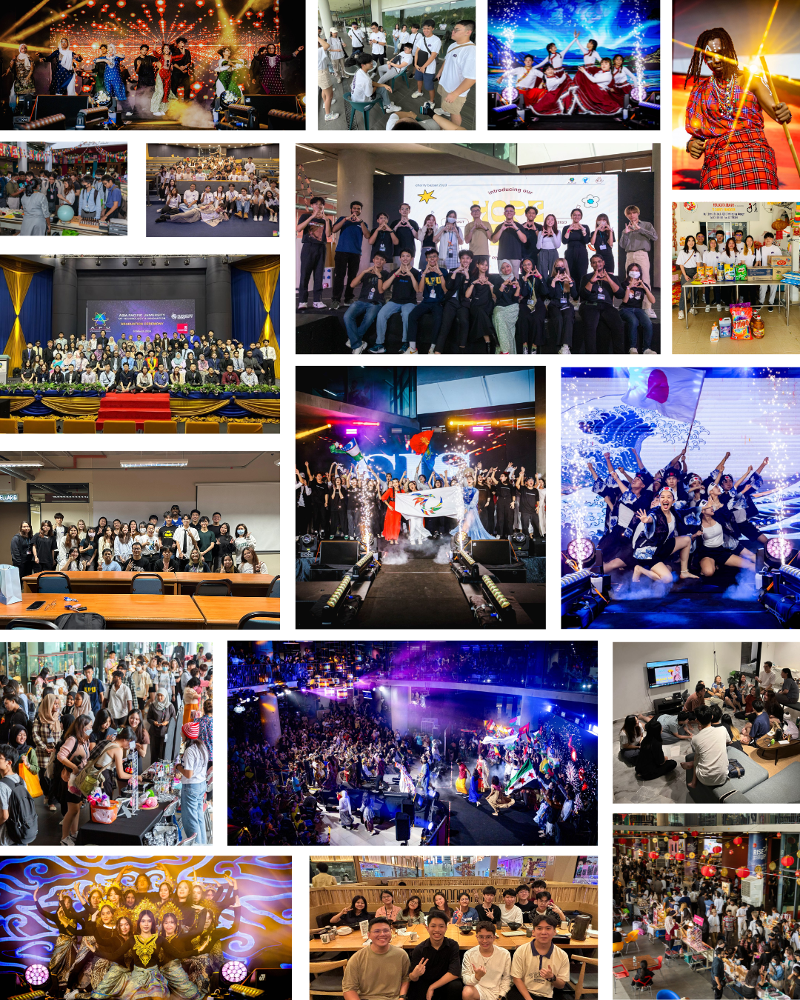

What is APNet?
APNet is Asia Pacific University's very own social media platform designed exclusively for APU personnel! Built by APU students, APNet helps you stay connected with fellow students and staff, whether through forums, event applications, recruitment opportunities, or even assignment help. Everything you need—networking, support, and resources—is right at your fingertips.

Development Team
The APNet development team consists of six passionate software engineering diploma students from APU, who came together to create the platform as our Final Year Project (FYP). To ensure efficiency, the team was divided into two specialized groups: front-end developers focused on user experience and design, while the back-end team handled server-side logic and database management. Additional information about the developers can be found below.
MEET THE DEVELOPERS

Marcus Chan Renzhi
Project Manager / Front-End Team
Project Manager for the APNet project. On the front-end team, in charge of designing the headers and footers for all pages, Forum page, About Us page, and Terms of Service page. Also in charge of ensuring every single page on APNet is mobile-responsive.
Kong Zheng Yang
Front-End Team
A member of the front-end team, in charge of designing the Login page, Register page, and Recruitment pages. Also in charge of designing the list of Reported Posts for Admins.
Sean Yap Shi Xuan
Back-End Team
A member of the back-end team, in charge of database management and querying. Created the APNet database and integrated it into the website.
Ooi Yew Shan
Front-End Team
A member of the front-end team, in charge of designing the Settings page, Profile pages, FAQ page, and the Reset Password page for regular users. Also in charge of designing the dashboard, Report Generation page, and list of Banned Users page for Admins.
Karlson Thien
Back-End Team
A member of the back-end team, in charge of the server-side logic for APNet. In charge of creating end points for every page and linking every APNet page together.
Jeremiah Sii Yii
QA Tester
The Quality Assessment (QA) Tester for the APNet website. In charge of testing every page after it was fully implemented and ensuring that all features function as intended.